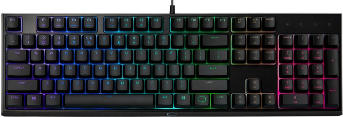
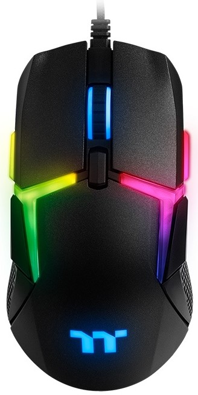
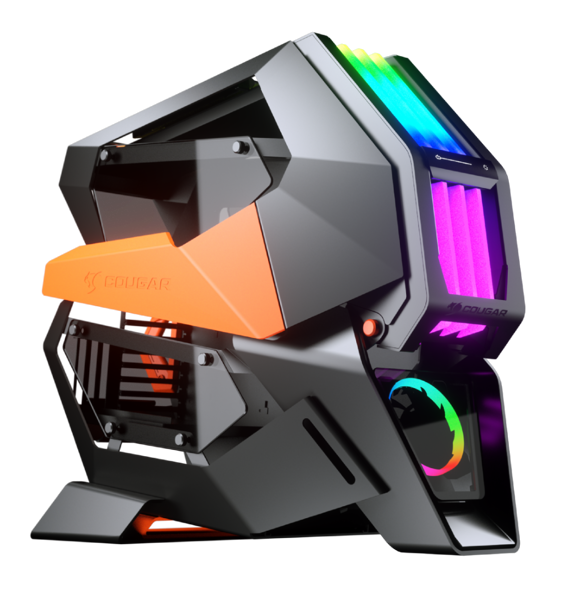
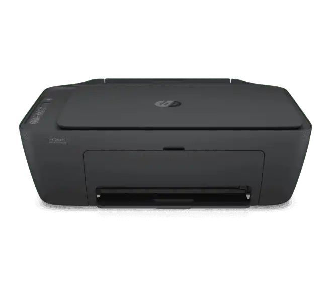
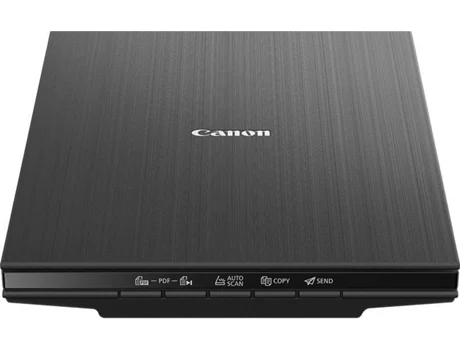
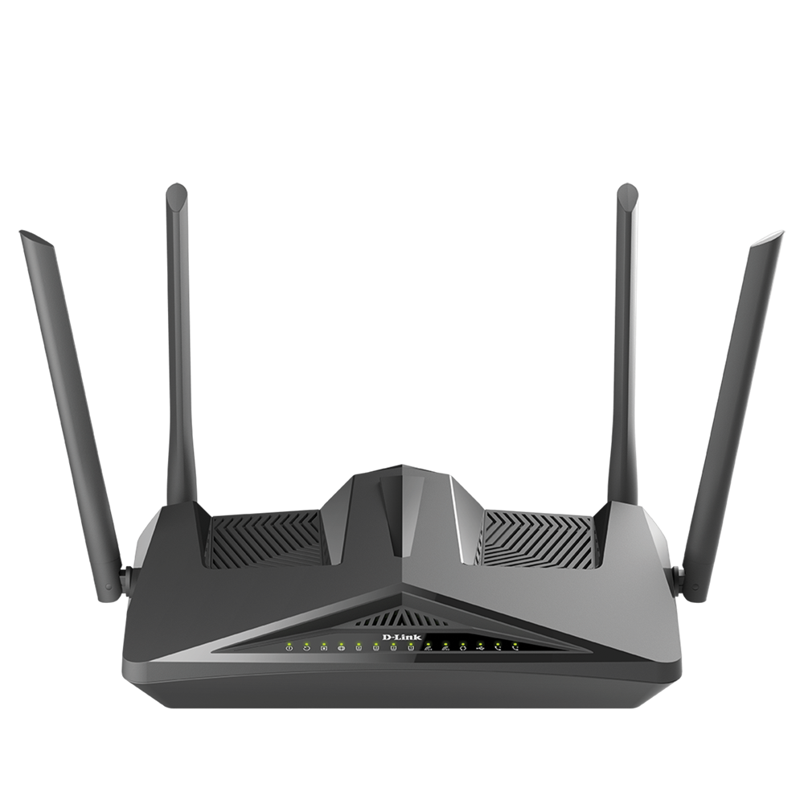
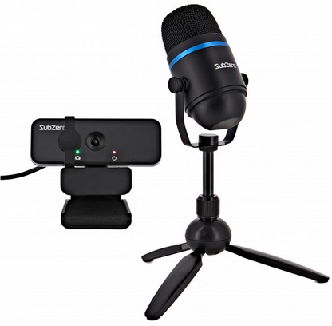
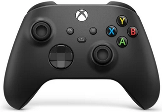

É o mais importante dispositivo de entrada e saída de dados do PC. Ele dá a você a situação imediata do que está acontecendo no computador. A informação que necessita ser apresentada visualmente é enviada ao monitor através da placa de vídeo que converte os sinais elétricos da CPU para minúsculos pontos de cor chamados: Pixels, eles formam a imagem na tela.
Teclado

É um periférico de entrada de dados, ou seja, através dele as informações inseridas no PC. É conhecido também como console; Nos teclados mais antigos existe uma chave que seleciona as opções: AT ou XT. Existem vários padrões de teclado, entre eles o teclado padrão IBM/PC, que possui 101 teclas que se dividem em quatro grupos: Alfanumérico: Corresponde a maioria das teclas e é composto pelas teclas de caracteres alfabéticos, numéricos, de símbolos e especiais. As principais são: ESC, TAB, CAPS LOCK, SHIFT, CTRL, ALT, ENTER e BACK SPACE. Numérico: Localiza-se a direita do teclado; Além dos números também estão nesse grupo os caracteres: * ( multiplicação ), / ( divisão ), - ( subtração ), + ( adição ) e Num Lock. Controle de tela: Têm funções diferentes de acordo com o software ( programa ) que vai usar. São elas: Print Screen, Scroll Lock, Pause Break, Insert, Delete ( Del ), Home, End, Page Up, Page down, setas de direção. Funções: É composto pelas teclas de F1 até F12 e as funções das teclas mudam de acordo com o programa que usar.
Mouse

É um periférico de entrada de dados. Funciona como um ponteiro na tela que chama-se:cursor. Antigamente o mouse eraconectado a uma porta serial, mas hoje em dia já foi praticamente substituído pelas portas USB ou PS/2. O mouse de "bolinha" também está sendo substituído pelo mouse óptico, que além de ter uma precisão maior ainda acumula uma quantidade menor de sujeira; Outra coisa interessante nesses novos modelos é essa roda no meio ( wheel ), que permite a rolagem sobre as páginas.
Gabinete

É a estrutura onde são montados todos os componentes do micro: Fonte, placa-mãe, drivers, disco rígido, CD-ROM, etc. Geralmente o gabinete é confundido com a CPU- Central Processing Unit (Unidade central de processamento, em português); CPU é apenas o Processador e no gabinete ficam guardados os componentes internos do micro que serão o próximo assunto a abordarmos.
Impressoras

A impressora usa as informações que estão na tela ou armazenadas em um arquivo salvo e as transfere para o papel. Existem muitos tipos diferentes de impressoras com vários níveis de qualidade e tecnologia. Podem ser conectadas a um computador através de uma rede sem fio ou por cabos.
Scanners

Permitem traduzir imagens, textos em papéis, e fotografias para o computador. Um scanner, basicamente, tira uma “foto” da fotografia, pintura, ou texto que você quer passar para o computador, digitalizando o arquivo. Em outras palavras, o scanner transforma um arquivo físico em um arquivo digital.
Modem e placa de rede

Um modem é usado para permitir a comunicação entre uma rede de computadores via cabos ou através de redes móveis de dados. A placa de rede, presente em placas mães ou como uma placa separada, é como um comunicador entre diferentes computadores. A placa de rede, em conjunto com um modem, permite que haja uma comunicação entre o computador e a internet, permitindo tanto o envio quanto a recepção de dados pelo computador. Aparecem com diversos modelos, tecnologias, e velocidades.
Webcam e microfone

São dispositivos de comunicação. A WebCam é uma câmera, que traduz sua própria imagem para o computador ou para envio para um outro computador através de uma rede. O microfone recebe os sons de seu ambiente ou sua própria voz e os traduz em dados para serem armazenados no seu computador ou para envio por uma rede.
Controles para jogos

São as chamadas manetes e joysticks, usados especificamente para jogos. Pode também assumir a forma de pedais e volantes para jogos de corrida. Esses controles funcionam basicamente como um teclado, mas enviam comandos para um jogo que traduz esses comandos em movimentos dos personagens do jogo ou dos veículos sendo pilotados.